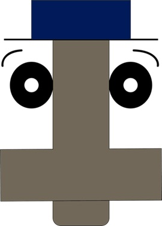

Acerca Del Creador
¿Que es este emprendimiento?
Este emprendimiento busca ayudar a todo compositor individual u estudio, que requiera apoyo en su obra.
En este caso por medio de plugins y samples de instrumentos grabados, convertidos en formatos digitales.
¿Que es esta página web?
Esta página es un compositor individual de plugins y samples por medio de distintas melodías, vibratos o ruidos.
Los plugins y samples de instrumentos ofrecen todo el esquema de notas, grabados en midis separados por cada una.

¿Quien soy yo?
Yo soy Ezequiel SC un compositor individual que fundo un emprendimiento de composición músical y audiovisuales.
Existen distintas divisiones de este negocio que son digitales, además de un estudio en Costa Rica.
